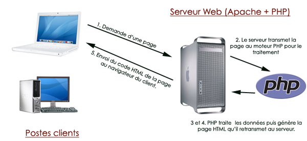
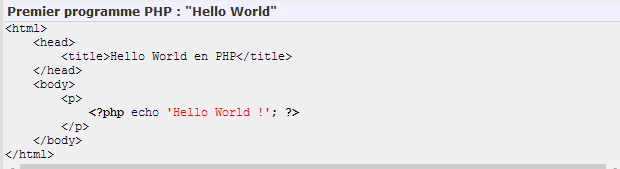
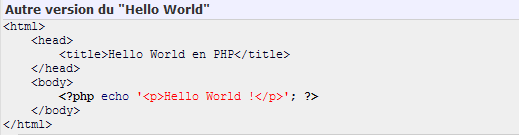

Le langage PHP a été inventé par Rasmus LERDORF en 1995 pour son usage personnel (mise en ligne de son CV en l'occurence). Autrefois abbréviation de Personal HomePage devenue aujourd'hui Hypertext Preprocessor, PHP s'impose comme un standard dans le monde de la programmation web par ses performances, sa fiabilité, sa souplesse et sa rapidité.
PHP a été inventé à l'origine pour le développement d'applications web dynamiques qui constituent encore le cas d'utilisation le plus courant et son point fort. Cependant, les évolutions qui lui ont été apportées jusqu'à aujourd'hui assurent à PHP une polyvalence non négligeagle. PHP est par exemple capable d'interragir avec Java, de générer des fichiers PDF, d'exécuter des commandes Shell, de gérer des objets (au sens programmation orientée objet), de créer des images ou bien de fournir des interfaces graphiques au moyen de PHP GTK. Dans cette présentation du langage, nous introduirons tout d'abord les caractéristiques de PHP, puis nous verrons en quoi il est particulièrement adapté aux développements d'applications web. Nous synthétiserons ensuite les autres types d'applications possibles aec PHP avant de terminer sur les limites que l'on peut lui reprocher.
PHP est tout d'abord un langage de script interprêté (en réalité précompilé en Opcode), gratuit,
OpenSource et distribué sous une license autorisant la modification et la redistribution.
Portabilité
PHP est supporté sur plusieurs systèmes d'exploitation. C'est par exemple le cas des versions Microsoft
Windows™, mais aussi des systèmes reposant sur une base UNIX (Apple MAC OS X™, distributions Linux ou
encore Sun Solaris).
Il sera alors très facile de déplacer une application écrite en PHP d'un serveur Windows d'origine vers
un serveur Linux sans avoir à la modifier (ou très peu).
Exécution
D'un point de vue exécution, PHP a besoin d'un serveur Web pour fonctionner. Toutes les pages demandées
par un client seront construites par le serveur Web, en fonction des paramètres transmis, avant d'être
retournées au client. Le schéma ci-dessous illustre le principe de fonctionnement de PHP.

PHP est un langage dit de « haut niveau » dont la syntaxe est très proche du langage C. Cette syntaxe proche du langage naturel lui assure un apprentissage rapide et peu de contraintes d'écriture de code. Néanmoins, la maîtrise rapide de sa syntaxe ne signifie pas la maîtrise de ses fonctionnalités et de ses concepts. Une bonne connaissance et une utilisation avancée de la programmation PHP nécessite un temps d'apprentissage relativement long.
Une des forces du langage PHP est sa richesse en terme de fonctionnalités. En effet, il dispose à l'origine de plus de 3 000 fonctions natives prêtes à l'emploi garantissant aux développeurs de s'affranchir de temps de développement supplémentaires et parfois fastidieux. Ces fonctions permettent entre autre de traiter les chaînes de caractères, d'opérer mathématiquement sur des nombres, de convertir des dates, de se connecter à un système de base de données, de manipuler des fichiers présents sur le serveur... PHP puise aussi sa richesse dans le dynamisme de sa communauté de développeurs. Celle-ci était estimée à 500 000 personnes environ en 2003 mais il est très probable qu'elle ait dépassé le million maintenant. Les profils de développeurs de la communauté sont très divers. Il y'a ceux qui apportent de nouvelles fonctionnalités et librairies de version en version, ceux qui traduisent la documentation en plusieurs langues ou encore les programmeurs ayant des compétences plus modestes qui réalisent des applications Opensources prêtes à l'emploi. Parmi les plus connues, nous pouvons citer les CMS (Joomla, SPIP, Dotclear, Wordpress...), les systèmes de ventes en ligne (OSCommerce), les forums (PHPBB, IPB, VBulletin), les frameworks (Zend Framework, Symfony, CakePHP, Jelix)...
Le langage est maintenant devenu un langage fiable, performant et viable. Il est capable de supporter des sites qui sollicent des millions de requêtes journalières. De nombreuses entreprises de renommée nationale et internationale lui font confiance pour le développement de leur site Internet. Nous pouvons parmi elles citer TF1, IBM, Le Monde, Le Figaro, Club-Internet, Orange, Pages Jaunes... Un récent rapport daté de novembre 2006 indique que 87% des entreprises du CAC40 utilisent PHP.
Le langage PHP a la principale fonction d'être spécialement conçu pour la réalisation d'applications web
dynamiques. Par définition, une « application (ou page) dynamique » est un programme capable de générer
une page unique en fonction de paramètres qui lui sont transmis.
Un script PHP peut donc être intégré directement à l'intérieur d'un code html. Petit exemple pratique
ci-dessous :

Le script PHP, clairement identifié par les deux balises
(fermeture), provoquera l'écriture de la chaîne de caractères Hello World entre
les balises html après son exécution sur le serveur.
Nous aurions également pu obtenir le même résultat en utilisant le script php suivant :

De ce fait, on en déduit que PHP est capable de générer du code HTML (ainsi que d'autres formats), ce
qui fait tout son intérêt. La présentation du document généré est alors complètement dépendante des
conditions passées et des paramètres initiaux fournis.
Nous conclurons que PHP a encore de beaux jours devant lui et que son avenir sera encore très prometteur avec l'arrivée de sa nouvelle version. Celle-ci lui apportera d'ailleurs une touche plus professionnelle car elle se destine plus particulièrement aux utilisateurs confirmés et professionnels.